Assembly
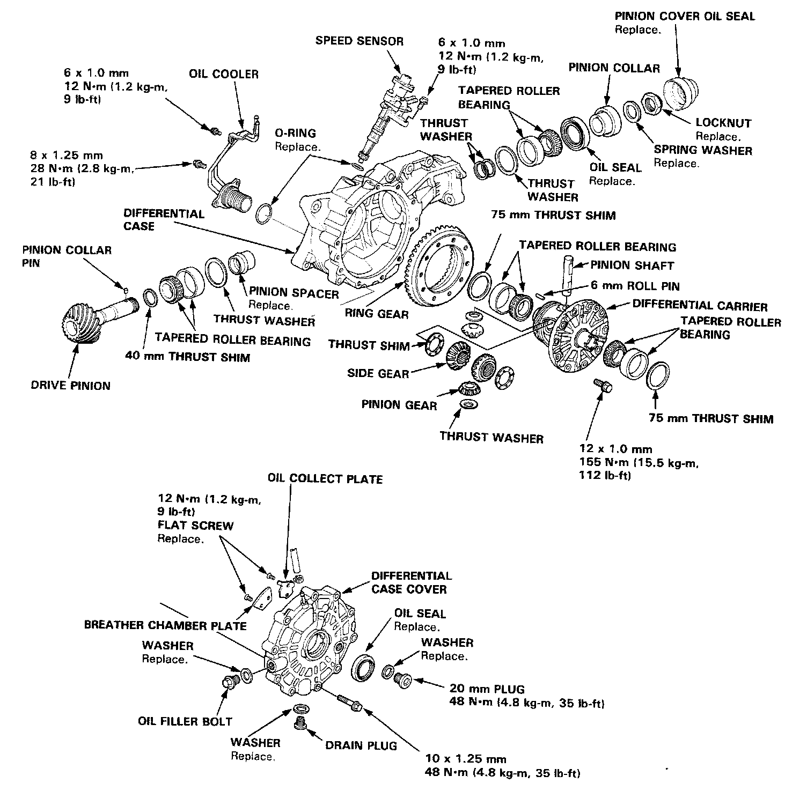
Note: If replacement is required, always replace the drive pinion and ring gear as a set and check the height adjustment.
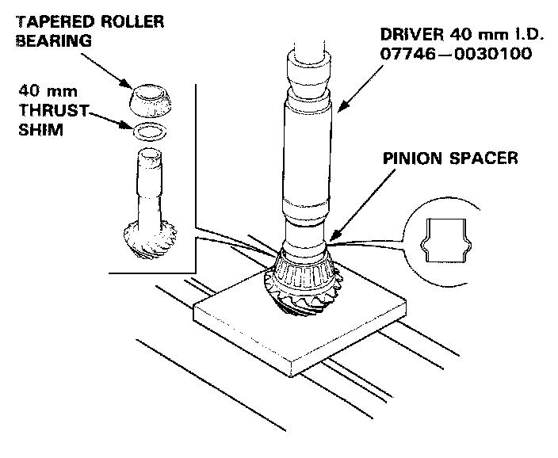
1. Using the old spacer with the special tool as shown, install the 40mm thrust shim and tapered roller bearing.
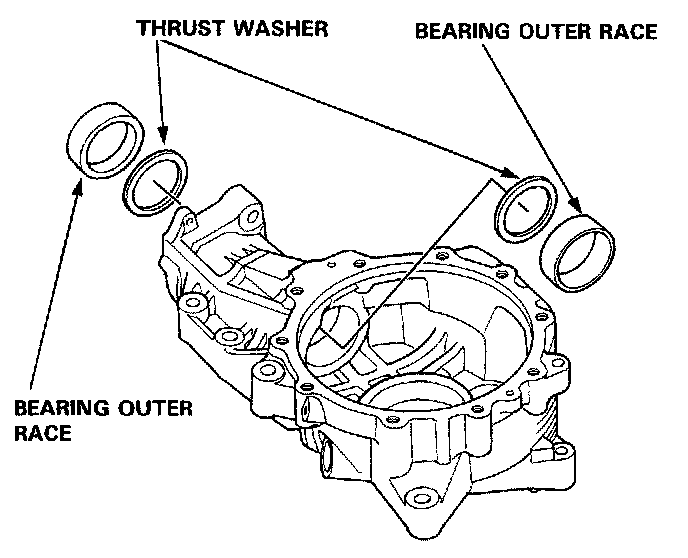
2. Check the differential case bearing surface areas for burrs and remove as necessary. Position the inboard thrust washer into the differential case.
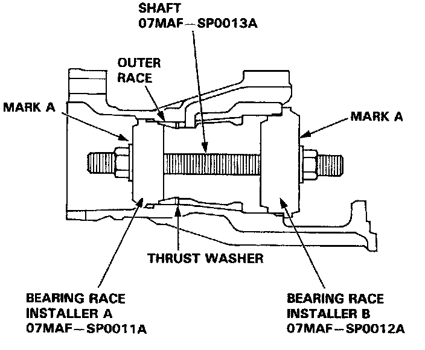
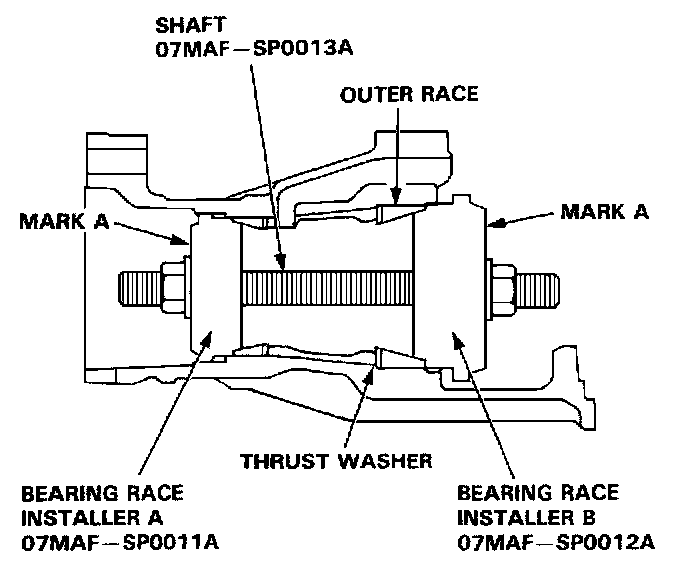
3. Using the sides of the special tools stamped "B", install the inboard bearing outer race, repeat for the outboard bearing outer race.
Note: Heating the differential case to approx. 100°C (212°F) will assist the bearing outer race installation. Do not allow temperature to exceed this amount and let the differential case cool to room temperature before adjusting the bearing preload.
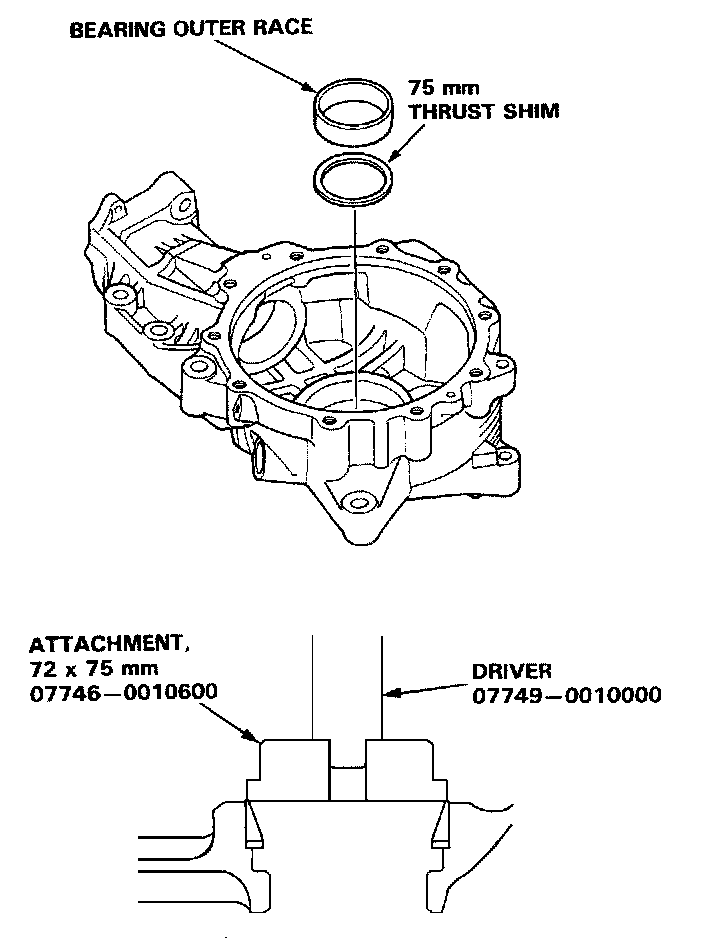
4. Install the 75mm thrust shim that was removed and bearing outer race into the differential case using the special tools as shown above.
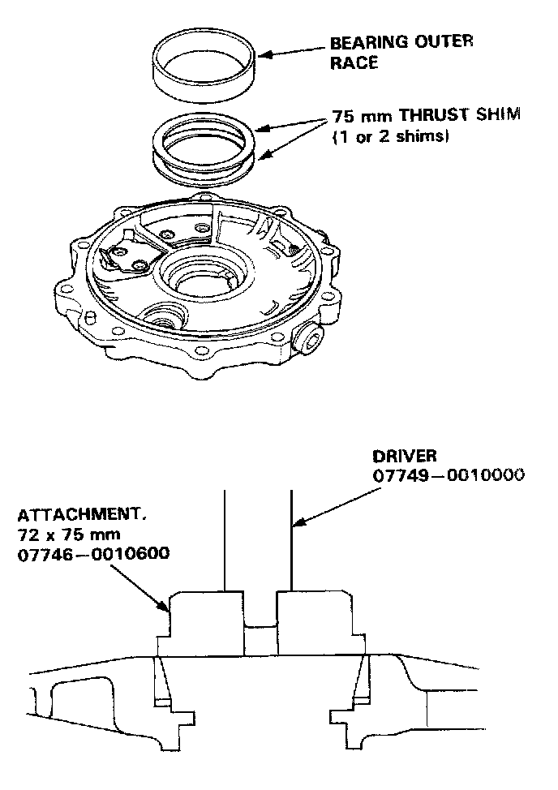
5. Install the 75mm thrust shim that was removed and the bearing outer race into the differential case cover using the special tools as shown.
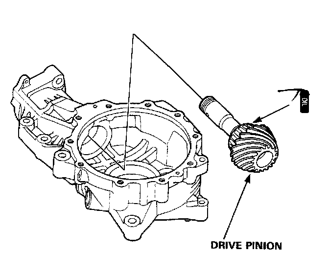
6. Apply lubricant to the tapered roller bearing then install the drive pinion into the differential case as shown. Do not install the pinion spacer and thrust washers at this time.
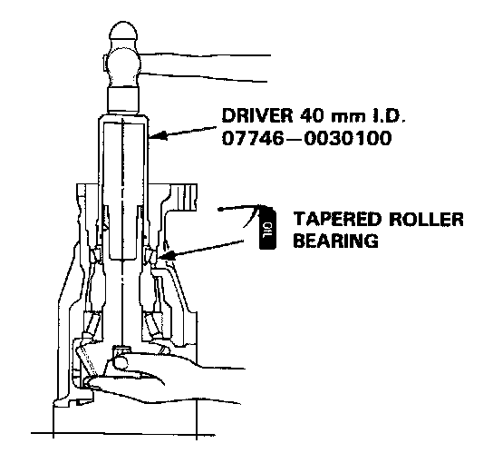
7. Apply lubricant to the tapered roller bearing then install it using the special tool by holding the drive pinion as shown above.
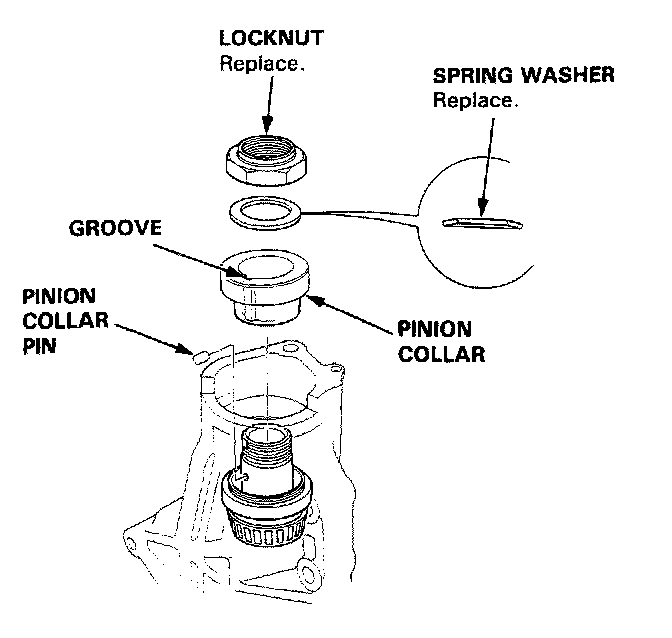
8. Install the pinion collar pin, then install the pinion collar by aligning the pinion collar pin with the groove in the pinion collar.
9. Install the spring washer and a new locknut. Note that the locknut has left-handed threads. Apply a sufficient amount of lubricant (gear oil and molybdenum disulfide in a mixing ration of 5:1) to the locknut and the threaded part of the shaft.
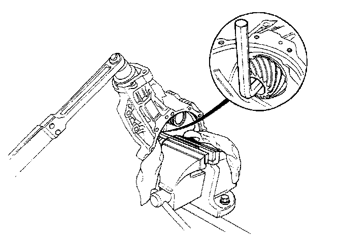
10. Hold the drive pinion using a 17mm hex socket or wrench as shown above and carefully tighten the pinion locknut until there is no play in the pinion shaft. Do not exceed 20Nm (14 ft.lbs) torque or bearing damage may occur.
11. Clean and pain the ring gear teeth lightly and evenly with Prussian Blue (on both sides of each tooth).
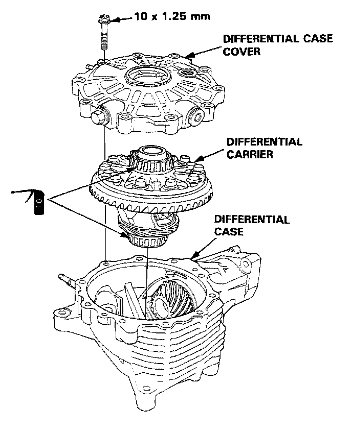
12. Apply lubricant to the tapered roller bearings, install the differential carrier into the differential case and reinstall the differential case cover.
13. Install the bolts and tighten in a criss-cross pattern, torque to 48 Nm (35 ft.lbs).
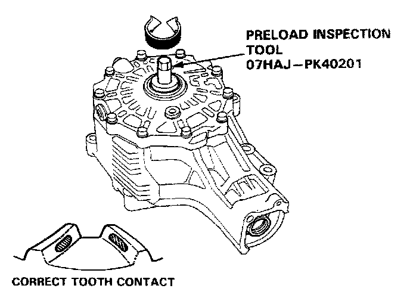
14. Install the special tool as shown. Rotate the ring gear one full turn in both directions while applying resistance to the pinion shaft.
15. Remove the differential case cover and check the tooth contact pattern (heel and toe). Adjust the drive pinion height as necessary.
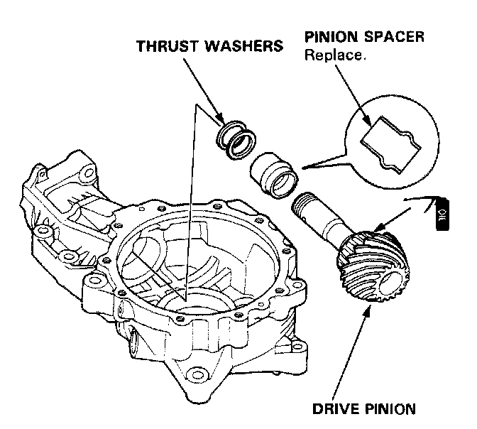
16. After adjusting the drive pinion height, remove the drive pinion and install a new pinion spacer and thrust washers to adjust the pinion preload as necessary.
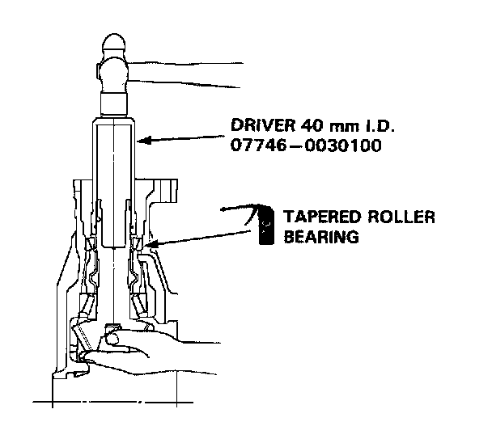
17. Apply lubricant to the tapered roller bearing then install it using the special tool while holding the drive pinion as shown above.
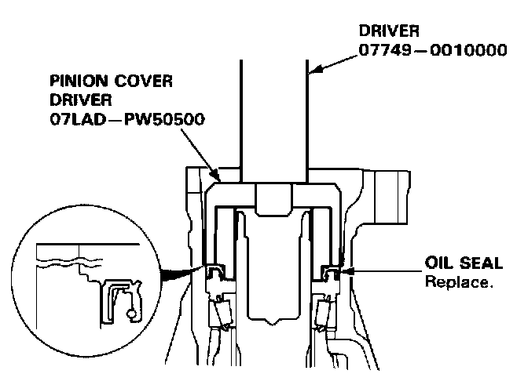
18. Install a new oil seal using the special tools as shown above.
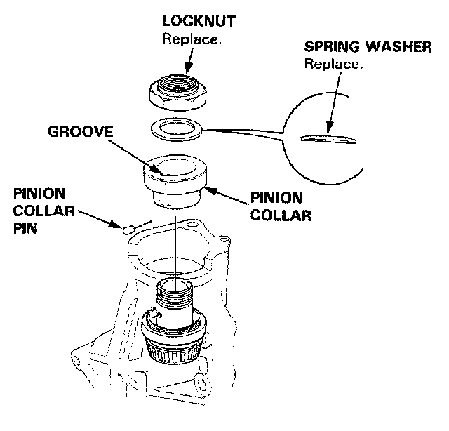
19. Install the pinion collar pin, then install the pinion collar by aligning the pinion collar pin with the groove in the pinion collar. Install the spring washer and a new locknut. Note that the locknut has left-handed threads.
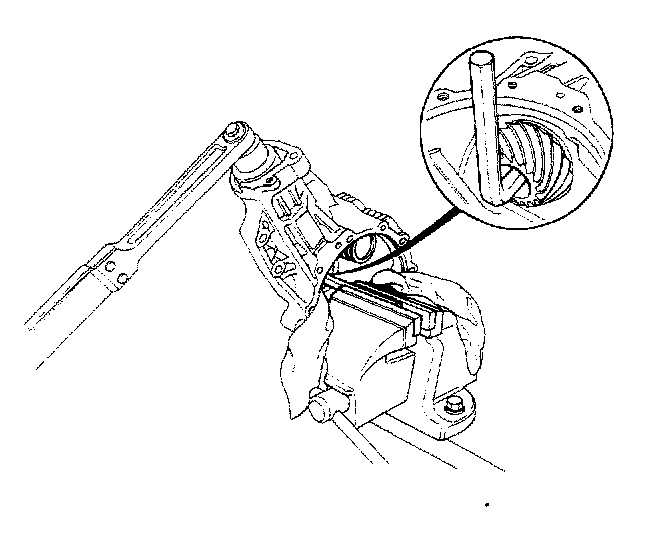
20. Hold the drive pinion using a 17mm hex socket or wrench as shown above.
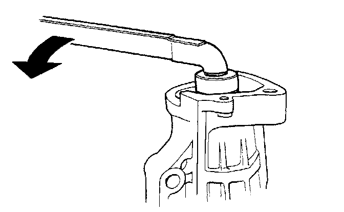
21. Torque the locknut to 26 Kg-m and measure the bearing preload. Preload should be:
New: 1.3 - 1.7 Nm (11.3 - 14.8 lb-in)
Reused: 0.65 - 1.05 Nm (5.6 - 9.1 lb-in)
22. If the preload exceeds spec, replace the pinion spacer. If the preload is less than spec, adjust by tightening the locknut a little at a time but keep the torque within 26 - 33 kg-m. If this is not possible, replace the pinion spacer.
23. Clean and pain the ring gear teeth lightly and evenly with Prussian Blue on both sides of each tooth.
24. Install the differential carrier into the differential case and reinstall the differential case cover.
25. Install the bolts and torque in a criss-cross pattern to 48 Nm (35 ft.lbs).
26. Install the special tool and rotate the ring gear one full turn in both diretions while applying resistance to the pinion shaft.
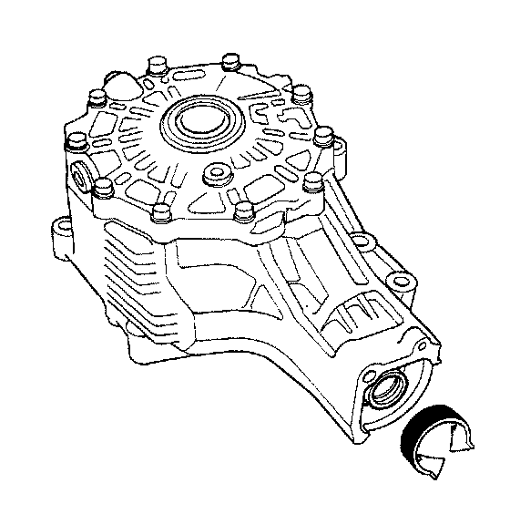
27. Remove the special tool and use a dial-type torque wrench on the pinion shaft to check total preload. Rotate the drive pinion several times to assure proper bearing contact. Preload should be:
New bearings: 2.58 - 3.30 Nm (22.4 - 28.6 lb-in)
Reused bearings: 1.56 - 2.20 Nm (13.6 - 19.0 lb-in)
Only ring gear side bearing replaced: 1.93 - 2.65 Nm (16.8 - 23.0 lb-in)
Only drive pinion bearing replaced: 2.21 - 2.85 Nm (19.2 - 24.7 lb-in)
28. If preload exceeds spec, adjust the ring gear backlash.
29. Secure the differential assembly in a vise using soft jaws.
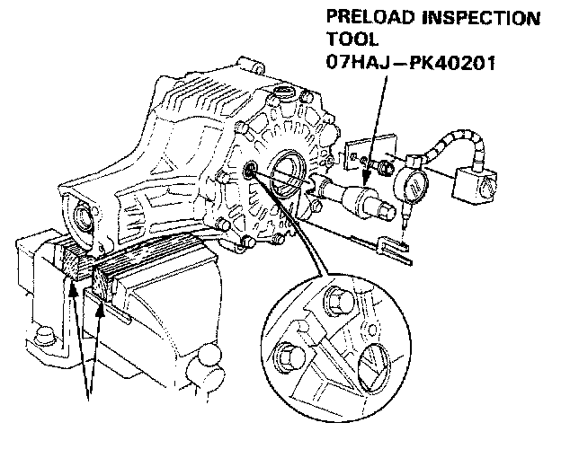
30. Align a differential carrier rib with the 20mm plug hole and install the special tools as shown above.
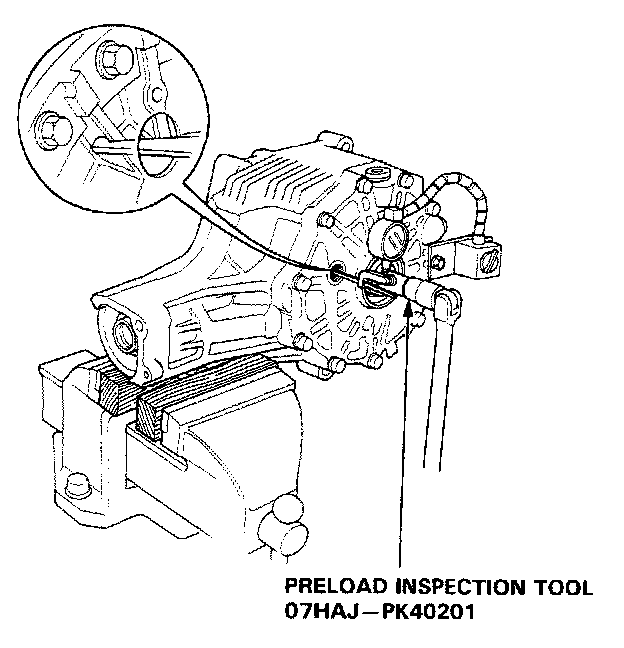
31. Measure backlash in 3 - 4 places on the differential carrier using the special tools as shown above. Backlash should be 0.04 - 0.10 mm (0.0016 - 0.0039 in). The difference between the 3 - 4 measurements taken must not exceed 0.04mm.
32. If backlash is less then spec adjust the ring gear backlash.
33. Remove the differential case cover and check the tooth contact pattern (face and flank). If the tooth contact is not correct, adjust ring gear contact then measure and adjust preload again.
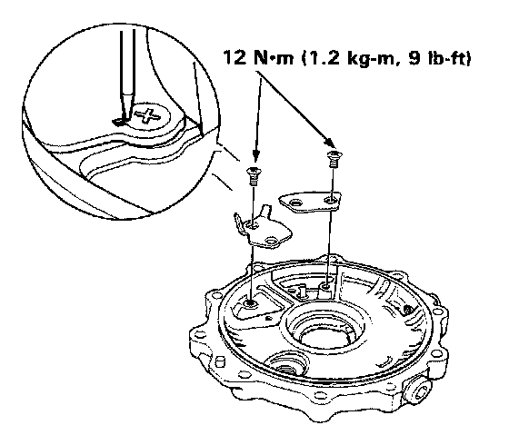
34. After all adjustments are made, install the breather plates and stake the screw heads in the groove as shown above.
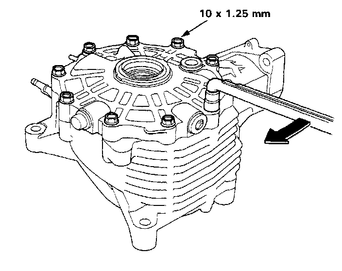
35. Apply liquid gasket to the mating surface of the differential case. This differential uses no gasket between the major cases, use Honda Genuine liquid gasket (P/N 08718-0001. Assemble the case within 20 minutes after applying the liquid gasket and allow it to cure at least 30 minutes after assembly before filling with oil.
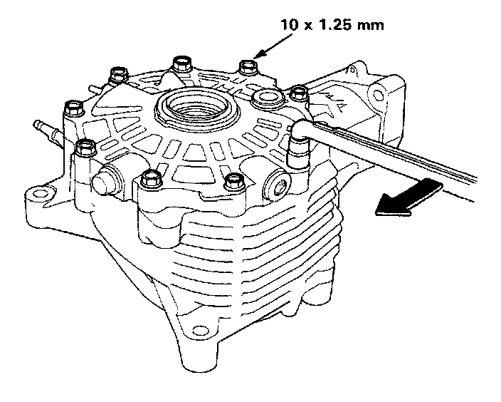
36. Install the differential case cover. IN a criss-cross pattern, torque the bolts to 48 Nm (35 ft.lbs).
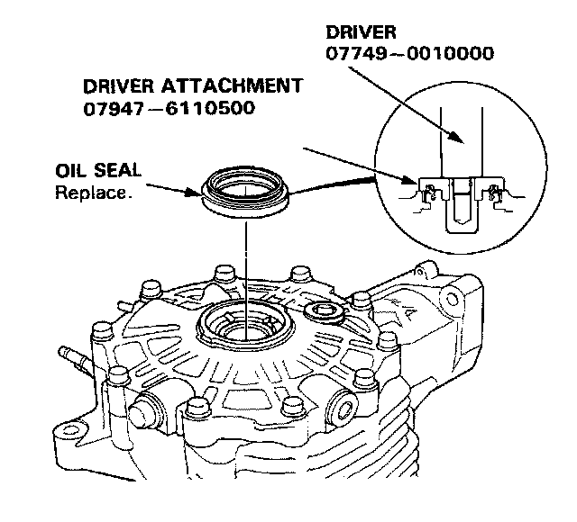
37. Install the oil seal using the special tools.
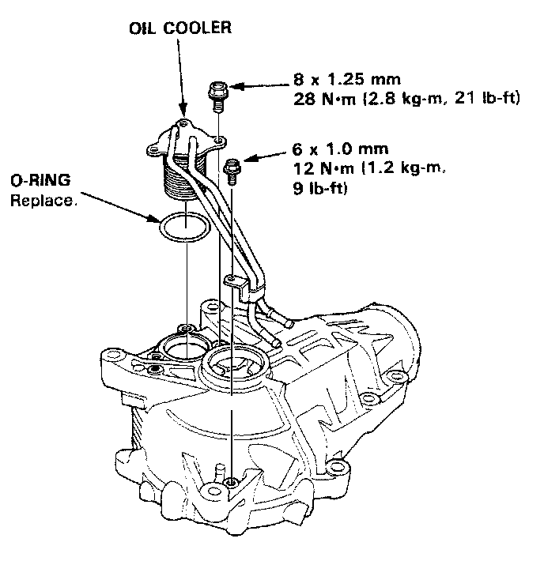
38. Install the O-ring and oil cooler.
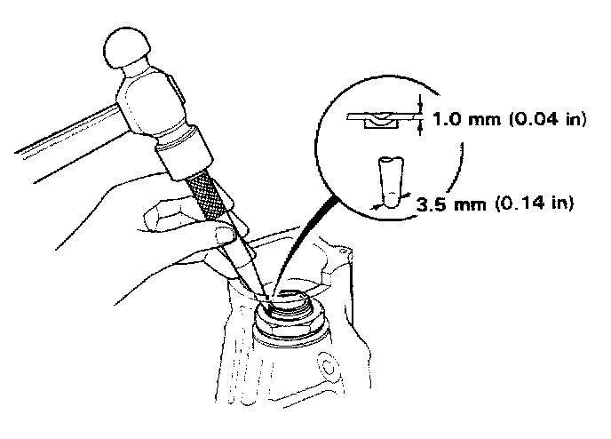
39. Stake the locknut tab into the groove.
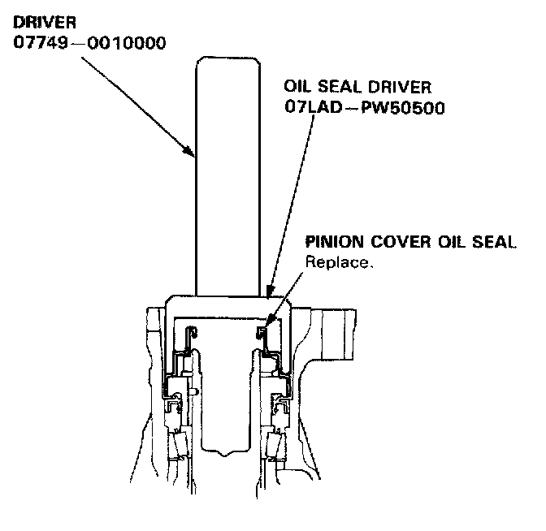
40. Install the pinion cover oil seal using the special tools as shown above.